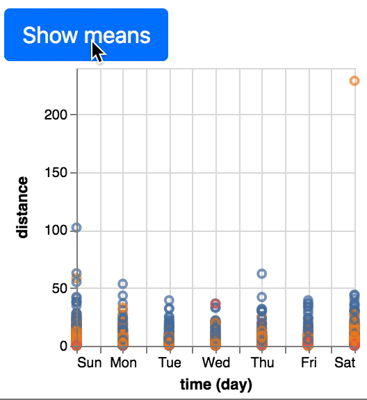
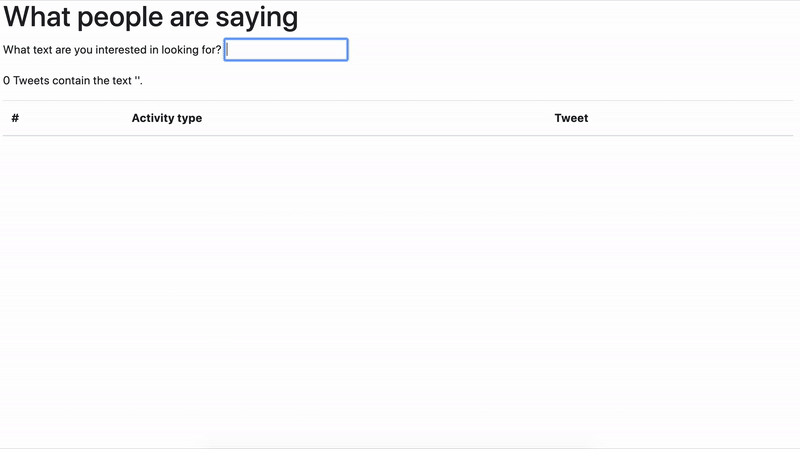

A2: Runkeeper Tweet Report in JavaScript and TypeScript¶
Overview¶
- In this assignment, you’ll use JavaScript and TypeScript to create a webpage report which helps a potential researcher understand a week’s worth of Tweets from RunKeeper, a popular running app. You’ll follow much of the methodology from one of Professor Daniel Epstein’s research papers, which looked to understand whether the content of RunKeeper tweets influences how or whether audience members respond.
Daniel A. Epstein, Bradley H. Jacobson, Elizabeth Bales, David W. McDonald, Sean A. Munson. From “Nobody Cares” to “Way to Go!”: A Design Framework for Social Sharing in Personal Informatics. CSCW 2015.
Assignment Details¶
Starter code¶
A starter repository is on GitHub Classroom.
Repository Structure¶
The repository contains 14 files (excluding the .gitignore, which specifies what files should not be committed). You will edit some of them in this assignment, but not all.
The files you should not need to edit are:
tsconfig.json: a project configuration file which sets compiler options for TypeScript.css/style.css: a CSS stylesheet for the assignment. Most of the layout is imported from Bootstrap.index.html: the root HTML file, which js/about.js will edit the DOM of to display information about the Tweets in the dataset.activities.html: another HTML file, which js/activities.js will edit the DOM of to display information about the activity types people posted to Twitter.description.html: another HTML file, which js/description.js will edit the DOM of to display an interface for searching through the Tweets.data/saved_tweets.json: a JSON object containing the same week’s worth of saved tweets. Your code won’t use this file, but the format may be useful as you’re looking through the Tweets.js/get_saved_tweets.js: a JavaScript file containing an asynchronous function which returns a week’s worth of saved tweets. This file will be used in place of parsing the data/saved_tweets.json file.
Note that this means you should not need to edit any HTML or CSS files. You may choose to, but you should only need to if you’re adding functionality beyond the assignment requirements.
The files you should edit are:
js/about.js: a JavaScript file which edits the DOM of index.html to display information about the Tweets in the dataset.js/activities.js: a JavaScript file which edits the DOM of activities.html to display information about the activity types people posted to Twitter.js/description.js: a JavaScript file which edits the DOM of description.html to display an interface for searching through the Tweets.ts/tweet.ts: a TypeScript file which creates a Tweet class used to parse different parts of the text of each Tweet.readme.txt: a readme file where you describe what you made for the assignment.
One additional file, js/tweet.js, will be created by transpiled ts/tweet.ts into JavaScript. Because this file can be generated, it does not be committed to the repository and is therefore listed in the .gitignore file. Do not edit this file.
This assignment can be completed without writing any additional files or functions. But you may add a file or function if you want (such as to complete one of the bonus features).
Setting up your Workspace¶
You will need to install a TypeScript transpiler. The TypeScript transpiler converts TypeScript files to equivalent JavaScript. It’s also recommended that you install a live reloader to simplify debugging.
The easiest way to install these two packages is through npm, the Package Manager in Node.js. Follow these instructions to install npm: npm installation instructions
Once npm is installed, open your favorite terminal and install the two packages for the assignment. Both are applications which run in the terminal rather than libraries, so it’s recommended that you install them with the -g (global) option.
npm install -g typescript
npm install -g live-server
Running the TypeScript Transpiler¶
The typescript transpiler, tsc, takes a project configuration file as an optional argument. The configuration file is in the root folder of the repository, so run tsc from there:
tsc --p tsconfig.json.
It’s also recommended that you add the --watch flag so your code automatically re-compiles. This code will create the JavaScript version of the Tweet class in js/tweet.js.
Running Live Server¶
You may find the live-server package helpful, which automatically refreshes your webpage when you make changes to it. It’s not perfect, but can be a helpful resource. Run it in your terminal from the root directory with live-server.
Requirements¶
There are three parts to this assignment:
Summarizing tweets on the about page.
Identifying the most popular activities to the activities page.
Adding a text search interface to the description page.
You’ll need to add features to the Tweet TypeScript class throughout. You can also optionally add one of a number of bonus features.
Much of this assignment involves using JQuery to modify the content of different classes or ids with computed values (for example, calculating the number of tweets of each type of activity in the dataset). The classes and ids which need editing appear with three question marks (???). With a few exceptions, the values should be computed dynamically. Meaning, your report would compute and display different results if a different week’s tweets were loaded instead.
You will not receive credit for these modifications if you edit the HTML directly or hard-code a variable to the value that the span should be set to. There are a few spans where hard-coding in activities.js is expected/allowed.
We have created skeleton functions in each JavaScript file to organize your code. In each of the parts, we often suggest functions to edit. You may choose to add new functions or not use the functions we created at all, so long as you stick to the above restrictions (e.g., not hard-coding, not editing the js/tweet.js file). We are not evaluating your code on style.
Part 1: Summarizing Tweets (about.js)¶
In this part, you will provide some summary information to a researcher interested in the Tweet data. You will identify the dates of the earliest and latest Tweets in the set, how many of each category exist, and how many of the completed tweets contain written text. Use JQuery methods to programmatically edit the spans for each question.
Tweet Dates (1 point)¶
The time attribute of the Tweet class contains the date of each Tweet. Write out the Month, Day, and Year of the earliest and latest Tweet (e.g., Monday, October 14, 2019). The JavaScript function toLocaleDateString() may be helpful for formatting the dates. Edit the about.js file to find the earliest and latest tweet and update the spans.
Tweet Categories (1 point)¶
The tweets can be divided into four categories:
Completed events, where the person is Tweeting an activity they recently finished.
Live events, where the person is Tweeting that they are currently doing an activity.
Achievement, where the person is indicating an achievement they have reached or a goal they have set.
Miscellaneous, for all RunKeeper-related discussion which did not involve posting about an activity.
The tweets in each category follow similar structures. Look through the text of the tweets in the dataset to devise rules for categorizing the tweets. Write those rules into the source getter function in tweet.ts. The JavaScript string startsWith, endsWith, and includes functions may help with this. Then, update the spans for each of the four tweet categories.
You may arrive at slightly different percentages depending on the exact rules you create, and we will not evaluate whether your rules pull exactly the same numbers that ours did. That said, about 95% of RunKeeper Tweets in the Epstein et al. research paper dataset were of completed events. Your numbers will deviate from the percentages in the research paper, but probably not by much (+/- 5%).
Format all percentages with exactly two decimal places. The header of index.html loads the Math.js library from a Content Delivery Network (CDN). You may find the .format() function in mathjs useful for formatting percentages.
User-written tweets (1 point)¶
Some of the Tweets in each category also contain text written by the user. These tweets all follow a similar structure. Look through the text of the tweets in the dataset to devise programmatic rules for identifying whether it contains user-written text. You can add those rules to the written and writtenText getter functions in tweet.ts. To determine this, you will need to strip out the #RunKeeper hashtag and the tweet link. After that, you’ll notice a phrase or two used in many of the tweets. That phrase (or phrases) was likely not written by each of thousands of people, but rather was provided as a default text string by RunKeeper itself.
About 25% of the completed event Tweets in the Epstein et al. paper included any written text. Again, you may arrive at a slightly different percentage. Format your percentage to two decimal places.
Part 2: Identifying the Most Popular Activities (activities.js)¶
In this part, you will help a researcher understand the activities people are logging in RunKeeper by identifying the types of activities and distances in the completed tweets and visualizing how distance varies by activity type and day of the week. Use JQuery methods to programmatically edit the spans for each question and Vega-Lite to create graphs.
Determining activity type and distance (2 points)¶
First, update the getters for activityType and distance in tweet.ts. activityType is the kind of physical activity that the person is performing in the tweet (running, skiing, biking, etc.). Distance is how long in Miles the physical activity was performed.
Note that these values only have to be identified for completed tweets, which follow a fairly rigid format. Syntax for regular expressions is beyond the scope of this class, but may be helpful for calculating these values. indexOf or search should also be sufficient.
Because RunKeeper is used all around the world, some distances will be expressed in Miles and others in Kilometers. Convert them all to Miles. You might typically use a library to help with this (Math.js has some helper functions). However, our setup for TypeScript makes importing libraries challenging, so approximating is fine (e.g., 1 mi = 1.609 km). You’ll make more use of libraries in future assignments.
Again, the exact breakdown of activity types may vary slightly depending on the rules you create to parse. But there should be a major dropoff in Tweets between the three most common activity types, with thousands or many hundreds of Tweets each, and the other activity types.
Some of the activity types logged, such as Yoga, are better expressed with time durations rather than distances. Each of the three most frequently-logged activity types should be distance-based, so you do not need to parse the time duration activity types.
Once you have determined the activity type and distance of each completed tweet, edit activities.js to update the spans for the most frequent types of activity, longest and shortest activity types, and whether the longest activities tend to be on weekdays or weekends. You can average across activities when evaluating length on weekdays versus weekends.
Graphing activities by distance (2 points)¶
Once activityType and distance are calculated, they should be plotted with Vega-Lite by editing the activities.js file. You will make three plots in total:
A plot of how many of each type of activity exists in the dataset. The specification of a potential visualization appears in
activities.js.A plot of the distances by day of the week for all of the three most tweeted-about activities. Day of the week should be encoded on the x-axis, distance on the y-axis, and activity type by color. There are a lot of points on this plot, so it’s hard to interpret which activity tended to be longest and on what day of the week.
A plot of the distances by day of the week for all of the three most tweeted-about activities, aggregating the activities by the mean.
When you first open the page, you may get an error that the specification is invalid; you must add a mark and encoding. The Vega-Lite examples or the online editor may be helpful as you build the visualizations.
The two plots should alternate appearing when the button with the “aggregate” id is pressed. As shown in this video (the activityType legend is intentionally cut off):

Use the information shown in your graph to answer the questions about what activity people tended to do the longest and when. The answers to these questions can be hard-coded, since calculating them programmatically would require a couple of annoying maps and filters.
Part 3: Adding a Text Search Interface (description.js)¶
In this part, you will implement a “search” interface for running tweets which allows a researcher to look through the tweets and their corresponding RunKeeper activities. To do so, you will add an event handler and filters to the descriptions.js file.
Implementing the search box (1 point)¶
Update the table with the tweet number, activity type. The searchCount and searchText spans should also update as a researcher types in the search box. Your code should check the search box and update the table after every character is entered into the box.
Populating the table (2 points)¶
As the person adds or removes a character from their search, the rows of the table should update. Your code should also clear the table when the search text is an empty string.
The links in the Tweet should also be clickable to allow the researcher to explore the data more. To parse these, use similar strategies to how you parsed the type of activity and identified the tweet category. The getHTMLTableRow() function in the tweet TypeScript class is a good place to parse the tweets and generate clickable links.

Optional/Bonus Features¶
The three parts of the assignment create a basic report tool. There are many ways of extending this tool, and we can offer one point of extra credit for implementing one extension. We’ve enumerated some potential extensions:
Rather than alternating between two visualizations, using Vega-lite’s streaming data or interactive charts to dynamically change one chart when the aggregate button is pressed.
Mining sentiment from the text of each Tweet and presenting it in the table. One way of identifying sentiment is to use a list of positive and negative adjectives, such as the ones devised in these research projects.
Submitting¶
To submit, zip your repository and upload it to Canvas. Any late uploads are subject to the course’s late policy.
Please update your readme.txt with how long the assignment took, who or what online resources you consulted with, any bonus features you added, and anything else we should know.
From your repository, we will transpile your Tweet class in the ts/tweets.ts file into js/tweets.js. We will therefore not grade any edits you made to this JavaScript file. Be sure you are coding in only the TypeScript file for this class. We may provide a different set of tweets by editing the (js/get_saved_tweets.ts) as well.
Grading¶
This assignment will be graded on a scale of 10 points, broken down as follows:
Summarizing tweets (3 points)
Identifying the most popular activities (4 points)
Adding a text search interface (3 points)
If you successfully complete a bonus feature, you will earn 1 point of extra credit. The maximum grade for this assignment is therefore 11/10.
In prior courses, you’ve been asked to follow good principles for indentation, naming variables, commenting, etc. We expect you to do the same in this course, but aim to avoid being draconian in our enforcement of these principles. Egregiously poor formatting, completely uncommented code, etc. may incur a small penalty (e.g., -1 point), but we expect this to be rarely applied.
As stated previously, we will not grade on whether the spans with values created in the report contain the exact same values as our calculations. We are just looking for them to be in the correct “ballpark” and will spend more energy evaluating the interactive portions of the report.